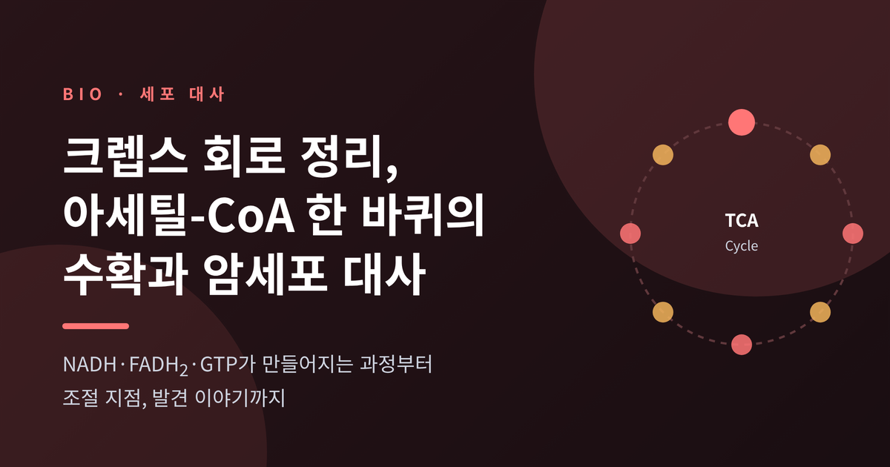
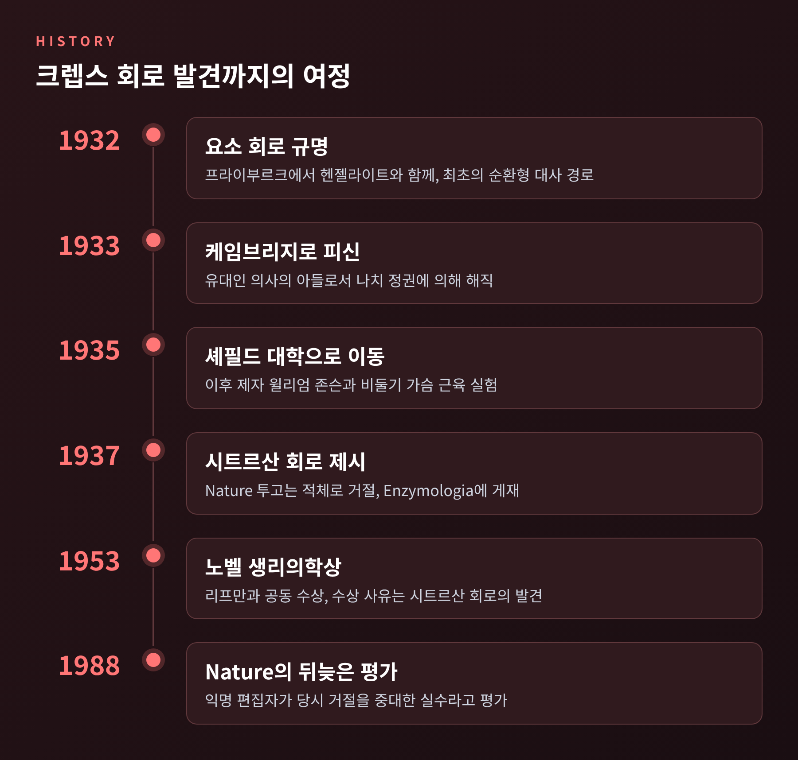
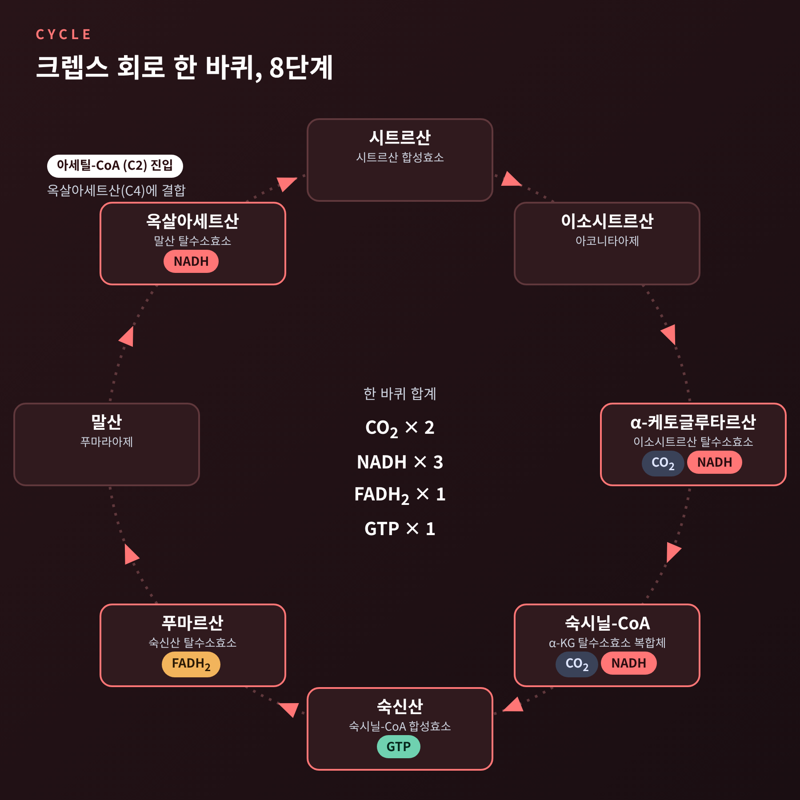
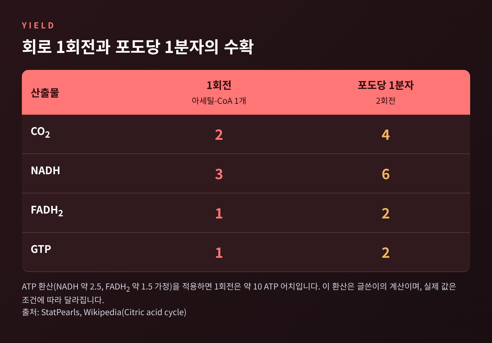
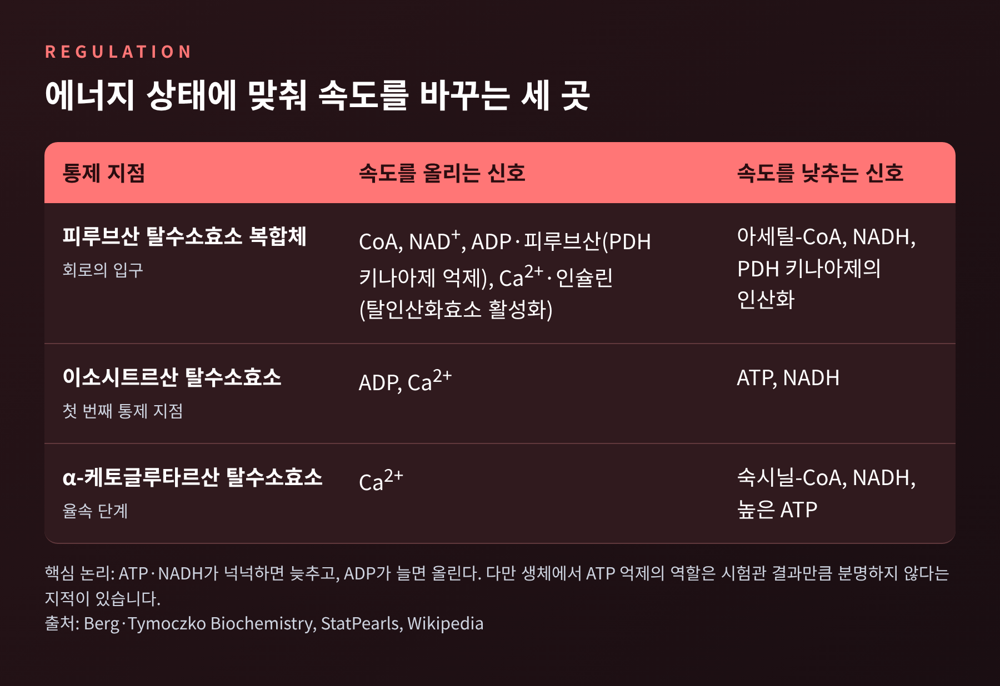
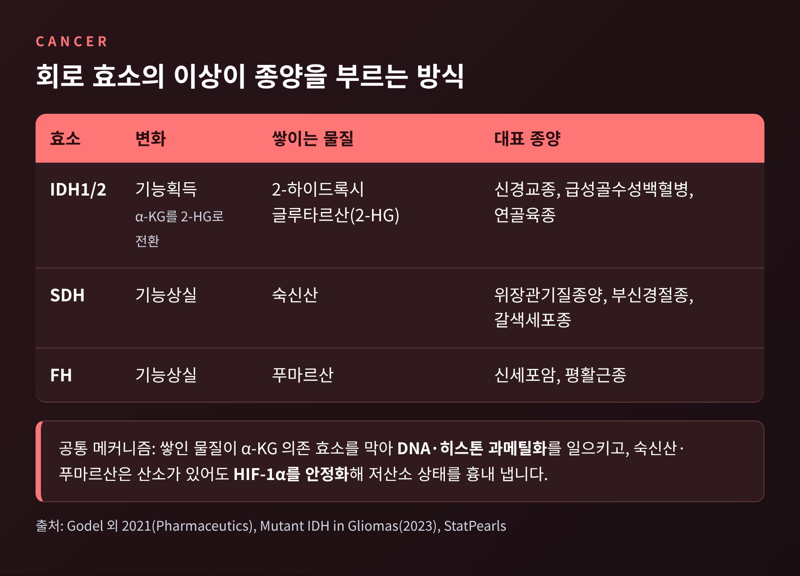

이번 글에서는 크렙스 회로(시트르산 회로, TCA 회로)를 정리해 보겠습니다. 아세틸-CoA가 회로를 한 바퀴 돌면 CO2 2개, NADH 3개, FADH2 1개, GTP 1개가 남습니다. 이 회로를 발견한 과정, 속도를 조절하는 지점, 그리고 암세포 대사와 이어지는 대목까지 차례로 살펴봅니다.
한스 크렙스는 1900년 독일 힐데스하임에서 태어났습니다. 1932년에는 프라이부르크에서 쿠르트 헨젤라이트와 함께 요소 회로를 밝혔습니다. 생체 안에서 처음 발견된 순환형 대사 경로였습니다.
이듬해 상황이 바뀝니다. 유대인 의사의 아들이었던 그는 1933년 나치 정권에 의해 자리에서 쫓겨났고, 케임브리지로 피신했다가 1935년 셰필드로 옮겼습니다.
셰필드에서 크렙스는 제자 윌리엄 존슨과 함께 비둘기 가슴 근육을 갈아 만든 현탁액을 들여다봤습니다. 시간이 지나면 대사율이 떨어지는데, 시트르산염을 넣으면 시료의 수명이 3배로 늘어났습니다. 앞서 센트죄르지 등이 근육 조직에서 여러 반응을 밝혀 둔 상태였고, 크렙스와 존슨은 그 조각들을 하나의 순환으로 이어 붙였습니다. 1937년의 일입니다. 존슨은 훗날 인터뷰에서 자신이 데이터 대부분을 모았고 크렙스가 방향과 자극을 주었다고 회고했습니다.

논문의 운명은 순탄치 않았습니다. 크렙스가 Nature에 원고를 보내자 투고가 밀려 있어 상당한 지연 없이는 실을 수 없다는 답이 돌아왔습니다. 결국 논문은 네덜란드 학술지 Enzymologia에 실렸습니다. 1953년 크렙스는 이 업적으로 노벨 생리의학상의 절반을 받았고, 나머지 절반은 코엔자임 A를 발견한 프리츠 리프만에게 돌아갔습니다. 크렙스 사후 7년째인 1988년에는 Nature의 익명 편집자가 당시 거절을 "중대한 실수"라고 부르는 글을 실었습니다.
회로는 진핵세포의 미토콘드리아 기질에서 돌아갑니다. 입구 역할은 피루브산 탈수소효소 복합체가 맡습니다. 해당과정에서 나온 피루브산이 이 복합체를 지나며 아세틸-CoA가 되고, 이때 CO2 1개와 NADH 1개가 생깁니다.
회로는 아세틸-CoA(탄소 2개)가 옥살아세트산(탄소 4개)에 붙어 시트르산(탄소 6개)이 되면서 시작됩니다. 시트르산 합성효소가 맡은 이 반응은 사실상 되돌릴 수 없어서, 회로를 한 방향으로 밀어 줍니다.

이후는 이렇게 이어집니다.
탄소 2개가 들어가 CO2 2개로 나가니, 회로는 제자리로 돌아옵니다. 이름이 '회로'인 이유입니다.
한 바퀴의 산출물은 CO2 2개, NADH 3개, FADH2 1개, GTP 1개입니다. 포도당 한 분자는 아세틸-CoA 두 개가 되므로 회로가 두 번 돕니다. 그러면 GTP 2개, NADH 6개, FADH2 2개, CO2 4개가 쌓입니다.

여기서 짚어 둘 점이 있습니다. 회로가 직접 만드는 고에너지 인산은 GTP 한 개뿐입니다. 진짜 수확은 NADH와 FADH2가 들고 있는 전자입니다. 이 전자는 전자전달계로 넘어가 대부분의 ATP를 만듭니다. 그 과정은 이전 글에서 다뤘으니 여기서는 환산만 해 보겠습니다.
NADH 하나를 약 2.5 ATP, FADH2 하나를 약 1.5 ATP로 보면 한 바퀴는 3×2.5+1.5+1, 곧 대략 10 ATP 어치입니다. 이는 위 가정에서 제가 계산한 값이며, 실제 세포의 수치는 조건에 따라 달라집니다. 포도당 한 분자의 완전 산화 총량도 자료마다 다릅니다. 이론상 최대는 38개이고, 실측에 가까운 추정은 30개 안팎입니다. 해당과정만으로는 순 2개에 그친다는 점과 견주면 격차가 분명합니다.
회로는 쉬지 않고 도는 것이 아니라 세포의 에너지 상태에 맞춰 속도를 바꿉니다. 교과서가 꼽는 주된 통제 지점은 두 곳입니다. 이소시트르산 탈수소효소와 α-케토글루타르산 탈수소효소입니다. 후자는 회로의 율속 단계로 알려져 있습니다.

논리는 단순합니다. ATP와 NADH가 넉넉하면 회로를 늦추고, ADP가 늘어 에너지가 모자라면 속도를 올립니다. 이소시트르산 탈수소효소는 ADP가 켜고 ATP와 NADH가 끕니다. 회로의 여러 효소는 NAD+나 FAD가 있어야 작동하는데, 이 보조인자는 에너지 전하가 낮을 때 풍부해집니다. 다만 한 가지 단서가 있습니다. ATP의 억제 효과는 시험관에서 뚜렷하지만, 생체에서는 ATP 농도 변동이 작아 큰 속도 변화를 설명하기엔 부족하다는 지적도 있습니다. 그래서 'ATP 하나가 스위치'라기보다 에너지 상태 전체가 신호라고 이해하시는 편이 안전합니다.
입구도 통제됩니다. 피루브산 탈수소효소 복합체는 아세틸-CoA와 NADH가 쌓이면 억제됩니다. 진핵생물에서는 PDH 키나아제가 효소를 인산화해 꺼 버리고, 칼슘은 이를 되살리는 탈인산화효소를 자극합니다. 근육이 수축하며 미토콘드리아 칼슘이 오르면 회로가 함께 속도를 올리는 이유입니다. 한 교과서는 격렬한 운동 중 회로 속도가 약 100배까지 오른다고 적습니다.
조절은 회로 바깥으로도 번집니다. 이소시트르산 탈수소효소가 막히면 시트르산이 쌓이고, 밖으로 나간 시트르산이 해당과정의 포스포프럭토키나아제를 막아 포도당 소비를 줄입니다. 반대로 이 시트르산은 지방산 합성의 재료도 됩니다. 회로는 에너지 공장이면서 동시에 아미노산, 헴, 퓨린의 재료를 내주는 교차로입니다.
조절이 어긋나면 병이 됩니다. 피루브산 탈수소효소 복합체 결핍은 젖산산증과 신경 퇴행을 부릅니다. 티아민(비타민 B1)이 모자라도 같은 효소가 느려져 각기병과 젖산산증 위험이 커집니다.
예전엔 암세포가 해당과정에만 매달리고 미토콘드리아는 망가져 있다고 여겼습니다. 오토 바르부르크가 1920년대에 산소가 충분해도 해당과정을 택하는 암세포의 습성을 관찰하고 그렇게 해석했습니다. 지금은 그림이 달라졌습니다. 암세포의 미토콘드리아는 대체로 온전하고, 어떤 종양에서는 산화적 인산화가 ATP의 큰 부분을 댑니다. 다만 해당과정의 몫은 보고마다 1%에서 64%까지 폭이 넓어서, 암세포 대사를 한 문장으로 못 박기는 어렵습니다. 암세포가 글루타민에 크게 기대는 것도 알려져 있습니다.
더 직접적인 연결은 회로 효소 자체의 돌연변이입니다. 회로의 중간산물이 오히려 발암 물질처럼 작동하는 것입니다.

IDH 돌연변이는 α-케토글루타르산을 2-하이드록시글루타르산(2-HG)으로 바꾸는 새 기능을 줍니다. 돌연변이 종양에서 2-HG는 밀리몰 농도까지 쌓입니다. 이 물질은 DNA와 히스톤의 메틸기를 떼는 효소들을 막아 과메틸화를 일으킵니다. SDH나 FH가 기능을 잃으면 숙신산과 푸마르산이 쌓입니다. 이들은 산소가 있어도 세포가 저산소 상태로 착각하도록 HIF-1α를 안정화시키고, 마찬가지로 후성유전 변화를 일으킵니다. 신경교종에서는 IDH1/2 돌연변이가 저등급의 70% 이상에서 발견됩니다.
이 발견은 약으로 이어졌습니다. 에나시데닙(2017)과 이보시데닙(2018)이 재발·불응 급성골수성백혈병에서 승인을 받았고, 2024년 8월 6일에는 IDH1/2 억제제 보라시데닙이 수술 후 2등급 성상세포종과 희소돌기교종에서 승인됐습니다. 3상 INDIGO 시험에서 질병 진행 위험비는 0.39였고, 다음 치료까지의 시간은 위약군 중앙값이 17.8개월이었던 반면 보라시데닙군은 중앙값에 이르지 못했습니다. 아직 모든 IDH 변이 암에 통하는 해법은 아니며, 한 억제제에 내성이 생기면 IDH1과 IDH2 사이를 바꿔 타는 경우도 보고됩니다.
정리하면 이렇습니다. 1937년 비둘기 가슴 근육 실험에서 출발한 회로는 에너지 공장의 부품표에 그치지 않았습니다. 세포의 에너지 상태를 읽는 계기판이자, 암의 단서이기도 합니다.
"회로는 에너지를 만드는 길이면서, 세포가 자신의 상태를 말하는 언어다."
Nature에서 퇴짜 맞은 짧은 논문 하나가 90년 가까이 지난 오늘 신약 승인표에까지 닿아 있다는 사실이, 기초 연구가 어디까지 번지는지를 보여 줍니다.